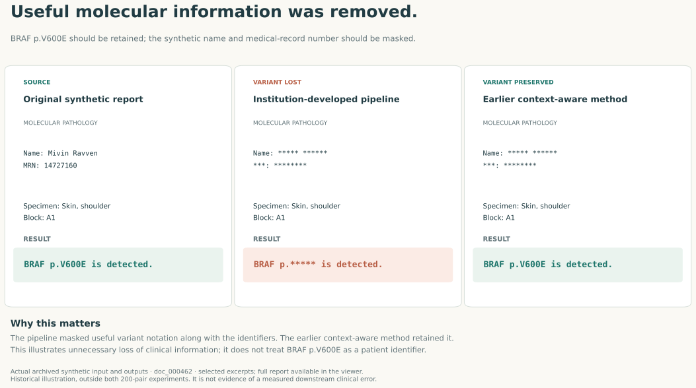
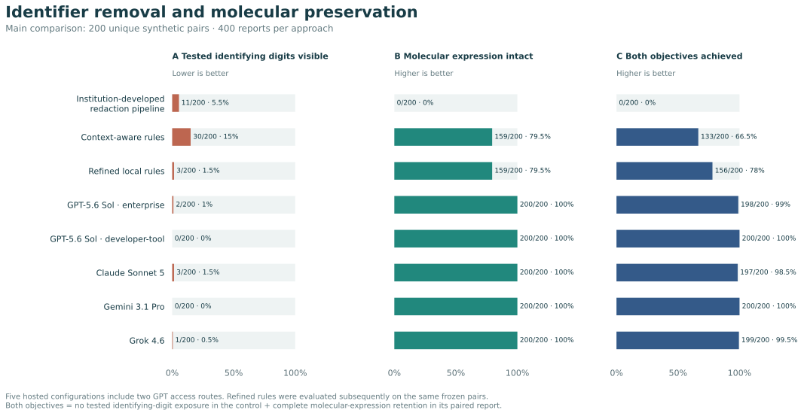
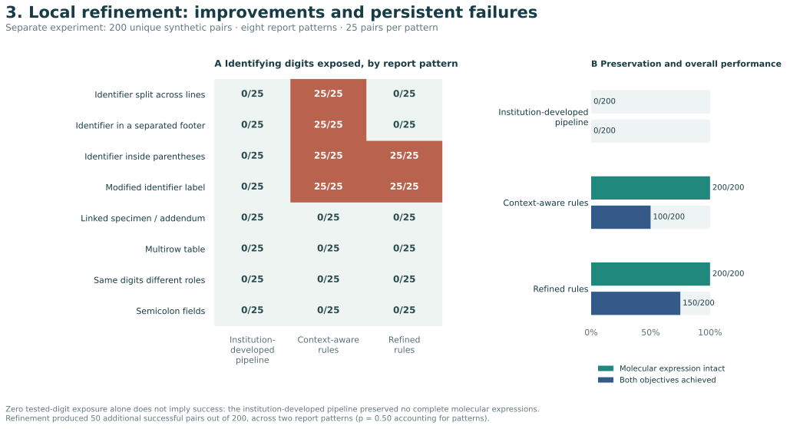
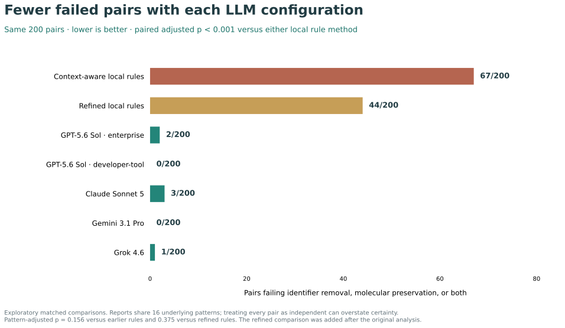

What survives when a pathology report is de-identified?
A useful report must lose its identifiers without losing its molecular information. This benchmark shows where those two requirements came apart.
pairs met both requirements with context-aware local rules.
pairs met both with the five frontier LLM configurations.
All 200 pairs are unique. Each pair has two reports: molecular notation to retain in one, and a similarly formatted identifying value to remove in the other. These are deliberately constructed stress tests, not patient cases.
Why would anyone use these reports with a model?
Potential research uses include report standardization, summarization, hypothesis generation and testing, and research abstraction. This experiment evaluates preparation of that text, not the accuracy or benefit of those applications.
Here, the model is itself the redactor and receives the original synthetic text. Using that workflow on real reports would require an environment approved for the identifiable input. This benchmark does not authorize sending patient reports to a public service.
What can these results establish?
The tested local methods have specific, reproducible limitations. Hosted configurations performed better descriptively on this selected and supplemented set. The study does not establish comprehensive anonymity, real-world safety, equivalence among models, or the impossibility of better local processing.
| Approach | Digits exposed lower is better | Expression intact higher is better | Both objectives |
|---|---|---|---|
| Institution-developed pipeline | 11/200 | 0/200 | 0/200 |
| Context-aware rules | 30/200 | 159/200 | 133/200 |
| GPT-5.6 Sol: enterprise | 2/200 | 200/200 | 198/200 |
| GPT-5.6 Sol: developer-tool | 0/200 | 200/200 | 200/200 |
| Claude Sonnet 5 | 3/200 | 200/200 | 197/200 |
| Gemini 3.1 Pro | 0/200 | 200/200 | 200/200 |
| Grok 4.6 | 1/200 | 200/200 | 199/200 |
BRAF p.V600E became BRAF p.*****.
BRAF p.V600E is a clinical finding to preserve in this example. The synthetic name and medical-record number are identifiers to mask. The pipeline unnecessarily obscured the variant; an earlier context-aware method retained it.

View the full synthetic report and its actual saved outputs
Original synthetic report
MOLECULAR PATHOLOGY REPORT Name: Mivin Ravven MRN: 14727160 DOB: 1960-02-07 Accession: 31ML.100803 Parent Pathology Accession: SK31-979432 Reported: 10/30/2031 Ordering Provider: Varel Velver TEST BRAF targeted assay SPECIMEN INFORMATION Specimen: Skin, shoulder Specimen Part: A Block: A1 RESULT BRAF p.V600E is detected. INTERPRETATION The result is interpreted in the context of the associated pathology specimen. Clinical significance depends on tumor type, disease context, and the validated scope of the assay. Findings outside the validated target regions are not assessed. QUALITY / COVERAGE Quality metrics are within validated limits. METHOD Targeted next-generation sequencing of validated genomic regions. LIMITATIONS Only the validated targets and alteration classes for this assay are assessed. A negative or limited result does not exclude alterations outside the tested scope. Report finalized by Vania Merver, MD on 10/30/2031 at 13:00 Mivin Ravven | 14727160 | 31ML.100803 | Page 1 of 1
Institution-developed pipeline
MOLECULAR PATHOLOGY REPORT Name: ***** ****** ***: ******** DOB: ****-**-** Accession: 31ML.****** Parent Pathology Accession: ****-****** Reported: **/**/**** Ordering Provider: ***** ****** TEST BRAF targeted assay SPECIMEN INFORMATION Specimen: Skin, shoulder Specimen Part: A Block: A1 RESULT BRAF p.***** is detected. INTERPRETATION The result is interpreted in the context of the associated pathology specimen. Clinical significance depends on tumor type, disease context, and the validated scope of the assay. Findings outside the validated target regions are not assessed. QUALITY / COVERAGE Quality metrics are within validated limits. METHOD Targeted next-generation sequencing of validated genomic regions. LIMITATIONS Only the validated targets and alteration classes for this assay are assessed. A negative or limited result does not exclude alterations outside the tested scope. Report finalized by ***** ******, MD on **/**/**** at 13:00 ***** ****** | ******** | 31ML.****** | Page 1 of 1
Earlier context-aware method
MOLECULAR PATHOLOGY REPORT Name: ***** ****** ***: ******** DOB: ****-**-** Accession: 31ML.****** Parent Pathology Accession: ****-****** Reported: **/**/**** Ordering Provider: ***** ****** TEST BRAF targeted assay SPECIMEN INFORMATION Specimen: Skin, shoulder Specimen Part: A Block: A1 RESULT BRAF p.V600E is detected. INTERPRETATION The result is interpreted in the context of the associated pathology specimen. Clinical significance depends on tumor type, disease context, and the validated scope of the assay. Findings outside the validated target regions are not assessed. QUALITY / COVERAGE Quality metrics are within validated limits. METHOD Targeted next-generation sequencing of validated genomic regions. LIMITATIONS Only the validated targets and alteration classes for this assay are assessed. A negative or limited result does not exclude alterations outside the tested scope. Report finalized by ***** ******, MD on **/**/**** at 13:00 ***** ****** | ******** | 31ML.****** | Page 1 of 1
Archived development example doc_000462; outside both 200-pair comparisons. Original text and outputs are available in the source record.
Inspect all 400 benchmark pairs and every saved output
Original text beside the saved output.
All names, identifiers and reports below are synthetic. Choose a worked example, then switch methods or inspect any of the 400 pairs. Highlighting is an overlay; the characters and asterisks are the preserved input and output.
Original synthetic report
Saved output
The technical stress tests use molecular-looking values in different roles. The exposure test checks designated digits only. Zero tested-digit exposure does not mean every identifier was removed.
Preserving Molecular Information During Pathology Report De-identification: A Synthetic Benchmark
Background: Pathology reports could support report standardization, summarization, hypothesis generation and testing, and research abstraction. De-identification must remove patient identifiers while preserving molecular findings needed for these uses.
Design: An institution-developed pipeline and context-aware rules were compared with five frontier LLM configurations (GPT-5.6 Sol through two interfaces, Claude Sonnet 5, Gemini 3.1 Pro, and Grok 4.6) on 200 unique synthetic report pairs. Success required preserving a molecular expression in one report and removing similarly formatted identifying digits in its paired control. A separate 200-pair experiment evaluated local refinement across eight report patterns. Paired analyses accounted for repeated patterns and multiple comparisons.
Results: The institution-developed pipeline preserved complete molecular expressions in 0/200 reports and exposed identifying digits in 11/200 controls. Context-aware rules preserved 159/200 expressions, exposed digits in 30/200 controls, and achieved both objectives in 133/200 pairs. LLM configurations preserved 200/200 expressions and achieved both objectives in 197–200/200 pairs, with 0–3/200 controls exposing digits (adjusted p=0.16 versus context-aware rules, accounting for report patterns). Local failures included molecular over-redaction and identifiers missed across line breaks, repeated footers, parenthetical fields, and modified labels. In the separate experiment, refinement reduced exposures from 100/200 to 50/200 while preserving all 200 molecular expressions; parenthetical-field and modified-label failures persisted.
Conclusions: Local refinement corrected specific failures but left identifier exposure. Frontier LLM configurations performed better descriptively. This synthetic benchmark evaluates identifier removal and molecular preservation, not genomic re-identification or clinical deployment safety.
The figures.

Counts describe the matched comparison; collection details are in the methods. Both outcomes must succeed within a pair. The five frontier LLM configurations represent four model families.
{kind=link}
{kind=link}
Actual archived input and outputs from doc_000462. This historical illustration is outside both 200-pair experiments; BRAF p.V600E is information to preserve, not the identifier under test.
{kind=link}
{kind=link}

The separate 200-pair experiment was not pooled with the main 200 pairs. Parenthetical and modified-label failures persisted. A compound template does not identify a single causal feature.
{kind=link}
{kind=link}

Each row divides the same 200 pairs into four mutually exclusive outcomes. Most disagreements favor the LLM, but individual exceptions remain. Adjusted p=0.16 after accounting for shared report patterns; this is not proof of clinical superiority.
{kind=link}
{kind=link}
Questions a reviewer should ask.
The review addresses general clinical readers, informatics, molecular pathology and statistics. It is an AI-assisted internal critique, not external peer review or a comprehension study.
Read the full critique and responses
Internal scientific and audience review
Review date: 21 September 2026. This is an AI-assisted internal critique using general-reader, informatics, molecular-pathology and quantitative-reviewer perspectives. It is not a review by USCAP, recruited specialists, or independent human participants. No new hosted LLM requests were made. The local experiment was extended to 200 unique pairs by evaluating 80 additional synthetic reports with three unchanged methods.
The defensible conference claim
This is a methods benchmark demonstrating a measurable conflict between removing identifying values and preserving molecular notation. The tested local refinements corrected some designed patterns while leaving others unresolved. Hosted configurations performed better descriptively on the selected, supplemented comparison. It does not establish universal futility of local processing, superiority on real clinical reports, or comprehensive anonymity.
General clinical reader
What am I looking at? One pair consists of two different reports: a molecular expression to preserve in one, and a similarly formatted identifier to remove in the other. The unit of joint success is the pair. The main experiment has 200 unique pairs, not 200 reports and not 200 real patients.
Why send pathology text to a language model? Potential research uses include extracting diagnosis and biomarker information, assembling cohorts, and summarizing findings across reports. This benchmark tests whether preparing the text can lose the information those uses need. It does not test the accuracy or benefit of those downstream applications.
Is the model being used before or after de-identification? Here it is the redactor: it receives the original synthetic report. A future workflow using a model to redact real reports would require an environment approved for the identifiable input. This experiment is not evidence that an unapproved public service is suitable for that first step. A separate downstream model could then receive the prepared report; that workflow was not tested.
Does zero exposure mean safe? No. The primary exposure endpoint checks designated identifying digits only. Other identifiers and identifying values require separate evaluation. The viewer labels the tested spans and does not call an output anonymous.
Informatics reviewer
Is this a fair model ranking? It is a matched endpoint comparison, not an isolated comparison of model architecture. Two GPT access routes, different original batch sizes, availability-based selection and supplemental collection are confounded with configuration. We display five configurations representing four model families and avoid a winner/ranking claim.
Were failed answers discarded until the results improved? Only missing or non-aligned records were supplemented. Valid outputs were retained regardless of endpoint performance. Sonnet contributed 104 supplementary records and Grok 167. The retained answers can be reproduced from their exact text and annotations; original failed attempts remain in the local archive. The public extracted-response package is not a complete raw transport archive.
What does reproducible mean here? Running python audit/reproduce.py uses bundled annotations and unchanged selected output strings to regenerate all seven main counts, the six paired contrasts and Holm adjustments, and the separate local comparison. It requires no credentials or model access. It verifies analysis reproducibility, not deterministic regeneration by changing hosted services. Local comparator masks are rendered from the preserved predicted character spans; they are not new runs.
Does the baseline represent every use of its upstream software? No. “Institution-developed pipeline” is a descriptive display label for the tested bundled implementation/configuration. It does not establish the performance of every configuration of its upstream software, institutional endorsement, or deployment validation. Upstream attribution belongs in the technical provenance, even when the abstract uses a descriptive label.
Is this a novel de-identification algorithm? No such claim is needed or established. The contribution is the paired stress-test design, explicit measurement of molecular information loss, preserved outputs, and documented limits of the attempted refinements. A comprehensive novelty claim would require a separate targeted literature assessment.
Molecular pathology reviewer
Are these realistic patient reports? They are synthetic templates and deliberately difficult role/context controls. Identifier controls intentionally use molecular-looking strings as identifying values. That construction isolates a challenge but does not estimate how often it occurs in practice. Full text is provided so readers can judge face validity themselves.
Is a retained coordinate necessarily an actionable finding? No. Some local examples contain an assay reference position with a pending or negative result. They demonstrate preservation of molecular notation, not detection of a pathogenic variant or a treatment recommendation. The examples retain result status, diagnosis, specimen linkage and tumor content as separate information.
Does removing one character matter? The endpoint requires exact retention of the annotated expression. A failure can be partial masking, not deletion of the entire finding. Depending on the expression, such alteration could impede variant identification or linkage; downstream errors were not measured here. Genome build, transcript and interpretation context cannot be inferred from a coordinate alone.
What did ordinary utility scoring miss? In the expanded 200-pair experiment, all methods preserved all 1,700 ordinary annotated utility facts, while the institution-developed pipeline preserved none of the 200 complete molecular expressions. Domain-specific preservation must therefore be inspected separately; this is not proof that every unannotated clinical fact survived.
Quantitative reviewer
Were records duplicated to make round denominators? No. The current main analysis contains 200 unique pairs and 400 distinct record IDs per approach. Earlier repeated-entry displays are not the data source for this release. The same 200 pairs are used across all seven approaches.
How were the 200 chosen? They were selected deterministically by a fixed salted hash of case ID from 213 complete pairs shared by the original GPT routes and Gemini, before the supplementary Sonnet/Grok collection. Selection did not use privacy or preservation outcomes, but it did depend on output availability; this remains a selection limitation.
Why do impressive counts not yield a strong pattern-level result? Many examples share designed report patterns. Treating every pair as independent yields very small exact McNemar p-values; swapping outcomes within whole pattern families produces Holm-adjusted p=0.156 for the five hosted-versus-context comparisons. Both analyses are exploratory. The pattern sensitivity analysis assumes exchangeability and does not turn these templates into independent clinical samples.
Why not declare equivalence between models with 197–200 successes? The study is not an equivalence or noninferiority design. Small differences do not establish a clinically meaningful ranking. A perfect score on 200 selected synthetic pairs is not an estimate of zero real-world failure risk.
Can refinement be claimed to generalize? Refinement improved two of eight local patterns and left two failing patterns. Its 50 additional successful pairs are descriptively useful; the pattern-level p=0.50 and limited designed diversity prevent a broad efficacy claim.
Local denominator extension
The initial 160-pair local experiment is preserved unchanged. At the author’s request, five new variants per existing pattern were added (40 unique pairs; 80 reports) and processed with the same frozen methods. The combined local experiment contains 200 unique pairs, 400 reports and 1,200 aligned outputs. This is a post hoc size extension within eight existing patterns, not 40 new independent pattern families. Context-aware and refined exposures are 100/200 and 50/200; the molecular expression is preserved in 200/200 with each.
Concrete revisions completed in this release
- Added full original synthetic reports with actual preserved masks, record IDs, annotations and source hashes.
- Included both corrected and persistent local failure patterns; examples are illustrative selections, not prevalence estimates.
- Included hosted failures in the browser so the display is not limited to model successes.
- Kept numerical results unchanged and reproduced them from the exported output strings.
- Replaced effect-axis jargon with four paired outcomes out of 200 in the comparison figure.
- Added a short explanation of the potential downstream use and the untested boundary between preparing reports and using their contents.
- Added explicit AI-assistance, data-generation and internal-review disclosures; no invented human validation or institutional endorsement.
What still requires people rather than editorial automation
The author must confirm authorship, affiliations, funding/conflicts, rights to release the bundled code/data and final submission attestations. Independent pathology assessment of report realism and annotation policy remains scientifically valuable but has not occurred. Representative clinical validation and downstream utility experiments remain future work, not concealed prerequisites claimed as completed. No conference submission has been made.
Clarification: the BRAF illustration
The archived BRAF p.V600E example demonstrates unnecessary removal of useful molecular information. The variant is not designated as a patient identifier in this example; the synthetic name and medical-record number are identifying fields. Identifier leakage and molecular over-redaction are separate endpoints. Neither the example nor this benchmark measures genomic re-identification risk.
Read the complete methods
Design and interpretation
The main comparison contains 200 unique pairs, 400 unique reports per approach. There are no duplicated cases or weighting to round the denominator. A pair comprises a clinical report containing a molecular expression and an identity control with a similarly formatted value designated as identifying. The selected 200 pairs were fixed by salted case-ID hash from 213 pairs with usable original outputs shared by both GPT access routes and Gemini. This is a comparison conditional on availability, not a prospectively sampled clinical cohort or first-attempt delivery estimate.
The institution-developed redaction pipeline is the bundled rule-based implementation used in this benchmark; the descriptor identifies its origin, not institutional endorsement or deployment validation.
Five configurations represent GPT through two access routes, Claude Sonnet, Gemini, and Grok. The GPT enterprise arm was collected through the ChatGPT Enterprise browser interface; the other arms used a developer-tool command-line runner. Model, access route, context, and batch-size effects are not separable in this design. The two GPT configurations are not independent model families. Exact runtime labels and prompts remain in the collection metadata.
Sonnet required supplemental collection for 104 target records and Grok for 167. The original task and source text were retained. Supplemental batches contained at most 16 records, then at most four for unresolved outputs, then three individual Grok requests. Only missing/non-aligned records were retried, with no case-specific feedback. Existing valid responses were retained regardless of privacy or utility performance. All original responses and unsuccessful attempts remain preserved. The last three fresh Grok responses aligned without manual correction; no normalization or response editing was needed. Whole-array extraction from permitted response envelopes did not change redaction strings. The earlier Enterprise batches contained 16 reports and original developer-tool batches contained 64 reports.
Endpoints. Exposure means any retained tested variable identifying digit in an identity control. Retention means exact preservation of the complete designated molecular expression in the clinical report. Joint success requires both outcomes within the same pair. These are narrow, explicitly annotated outcomes: they are not comprehensive privacy checks. Missing, malformed or non-aligned records were never treated as safe. After supplemental collection, all 400 selected records in each of the seven approaches were alignable; availability outside this selected set is retained in the historical evidence.
Statistics. Two-sided exact McNemar tests evaluate paired joint success. A sensitivity analysis swaps method outcomes at the level of the 16 report-pattern families, preserving within-family dependence. Holm adjustment is applied across six post hoc comparisons separately for each testing method. The pattern-block test assumes exchangeability and does not establish independent clinical sampling. Differences and counts are primary; no model equivalence or population-level effect is claimed. The separate local experiment now has 200 pairs across eight families. Its single exploratory refinement contrast is reported separately; the original 160-pair analysis and its eight-contrast adjustment family remain archived. Neither local cohort is pooled with the main comparison.
Independent sources of evidence. The expanded 200-pair local experiment comprises eight designed mechanisms with 25 pairs each. After the initial 160-pair analysis, five new variants per mechanism (40 pairs, 80 reports) were generated and evaluated with unchanged frozen methods. The original 960 outputs were retained; 240 new outputs were added. This post hoc size extension adds variants within existing patterns, not new independent pattern families. Methods were frozen before evaluation; this is not independent expert case validation. The 1,700 ordinary utility annotations cover diagnosis, specimen/linkage, result status and quantities and exclude the separately scored molecular coordinate expressions. The historical development and policy-sensitivity analyses use different cohorts and endpoints and are presented separately.
Scope. Task-policy rules were investigator approved. Report generation and analysis were AI-assisted, with no independent expert adjudication claimed. The benchmark measures de-identification behavior; it did not measure downstream research accuracy, clinical benefit, re-identification risk, or permission to send clinical data to a service. The local failures support limitations of the tested methods, not the impossibility of all local processing.
The rest of the experimental record.
Earlier development, broader identifier checks and the incomplete Muse arm remain separate from the main comparison.
Inspect historical findings and current Muse status
Local development trajectory
Early context extensions recovered molecular content but increased identifying-digit exposure. Later context-aware rules improved both endpoints relative to that early extension, yet still left reproducible failures. The table below describes the original development/evaluation split, not the current 200-pair selected comparison.
| Stage | Development digit exposure | Development retention | Evaluation retention |
|---|---|---|---|
| Institution-developed pipeline | 16/192 | 0/192 | 0/64 |
| Early context extension | 88/192 | 96/192 | 16/64 |
| Context-aware rules | 40/192 | 144/192 | 48/64 |
Separate local experiment on 160 new pairs
The 320 frozen candidate documents were processed by the bundled Philter adapter with NLTK 3.9.2, then by unchanged frozen v5 and v6. All 960 outputs were valid aligned masks. Source inputs, candidate freeze, and method hashes remained unchanged. The candidate combines eight designed mechanisms; it is not an externally sourced or independently reviewed cohort.
| Method | Identity controls exposing tested digits | Clinical expressions preserved | Pairs meeting both narrow objectives |
|---|---|---|---|
| Institution-developed pipeline | 0/160 | 0/160 | 0/160 |
| Context-aware rules | 80/160 | 160/160 | 80/160 |
| Refined rules | 40/160 | 160/160 | 120/160 |
Context-aware-rule exposures occurred in wrapped-adjacent-result, parenthetical-inline, separated-footer, and qualified-result mechanisms (20 each). Refinement repaired the wrapped and footer mechanisms in this set but retained all 20 parenthetical-inline and all 20 qualified-result exposures. No method was changed after observing these results.
Broader identifying-value residuals occurred in 20/160 Philter controls, 80/160 v5 controls, and 40/160 v6 controls. These broader residuals are distinct from the tested variable digits.
All three methods retained the 1,360 separately annotated ordinary utility facts (diagnosis, specimen/linkage, result status, and quantity). This exact-text endpoint excludes the separately scored coordinate expression and does not measure semantic understanding. Its uniformly perfect result alongside Philter's 0/160 coordinate retention illustrates why generic utility measures can miss a critical molecular failure.
Historical label/value policy sensitivity
The approved policy was implemented through explicit removal of generic labels and explanatory phrases from 256 historical coordinate-shaped identity annotations. All original spans and raw responses remain unchanged in their source locations. The revised annotation file and complete change ledger are saved separately. The same revised gold was applied to all five completed hosted arms and all five historical local comparators.
Among assessable hosted identity controls, designated-value residuals occurred in Enterprise Sol 6/256, Cursor Sol 0/256, Sonnet 0/196, Gemini 0/214, and Grok 0/161. Enterprise's six include the four previously reported tested-digit exposures and two controls retaining only the chromosome number 17. Thus 6/256 broader value residuals must not replace or be conflated with the 4/256 narrow digit endpoint. No model's assessability or narrow endpoint changed.
These are automated, post hoc policy-sensitivity results following user approval of the task rules. They are not independent expert adjudication of each report.
Muse collection snapshot
Muse returned 20 usable reports: 8 identifying-value controls and 12 clinical reports. Tested digits were exposed in 0/8 controls; molecular expressions were retained in 12/12 clinical reports. There were 0 complete matched pairs, so no paired success estimate is available. The next batch ended with resource_exhausted; remaining requests were held. This error does not identify the cause as account credits. Muse remains excluded from the main comparison.
{kind=link}
{kind=link}
A small, portable audit trail.
The release includes the 400 main synthetic reports, 2,800 selected output masks, the 400 separate local reports and 1,200 local outputs, annotations, source hashes and a Python audit. No model credentials or network connection are required to reproduce the counts and paired statistics.
python audit/reproduce.py
Main results · Paired statistics · Example IDs · File hashes · Audit instructions
These are exact extracted answer strings; raw transport logs and unsuccessful attempts remain in the local archive. Local masks are rendered from frozen predicted spans. This audit reproduces analysis; it does not promise identical answers from a future hosted model.
USCAP preparation status
Conference preparation
Checked 21 September 2026. The official USCAP 2027 meeting site lists the meeting in Vancouver, 13–18 March 2027. Its “Submit an abstract” link goes through USCAP's abstract entry point to a sign-in portal.
The current abstract-specific character limit, figure allowance, anonymity rules, public-release/embargo terms and AI-disclosure wording were not accessible without sign-in during this review. No limits from another meeting or a prior year have been substituted. The four-part structured draft and separately exported figures are prepared for final portal checking, not certified as compliant or submitted.
Suggested scientific category for the author to evaluate: informatics, with molecular pathology as the application. This is a proposal, not a verified list of current portal categories.
Prepared materials
- Structured abstract: Background, Design, Results, Conclusions; concise results and specific local failure mechanisms.
- Main comparison figure: both privacy and molecular preservation, plus paired success.
- Local-mechanism figure and a worked-report figure; the latter makes the synthetic task inspectable.
- Supplementary paired-analysis figure and downloadable numerical data.
- Full-text synthetic report viewer, machine-readable annotations and unchanged selected masks.
- Portable analysis audit with no dependency on hosted model availability.
- Separate release page/QR assets when a verified public destination is available. Keep author-identifying repository links out of a blinded submission unless the conference explicitly permits them; a poster link can be handled separately.
Final author actions
Check the live submission form for its exact constraints; confirm author list/affiliations and required declarations; decide which figures the venue permits; confirm public-release policy before posting conference-bound results. Neither fee payment nor abstract submission is included in this work.
This document records an access limitation, not an additional scientific experiment or an assertion that public data sharing is prohibited.
AI assistance and provenance
Synthetic report generation, code, analysis, editorial drafting and this internal review were AI-assisted. The investigator approved the task policy. No independent specialist adjudication or reader testing is claimed. AI assistance is disclosed rather than disguised; the evidence is made specific and inspectable.
Display names are deliberately descriptive. Exact collection labels and upstream baseline attribution are documented in technical provenance.